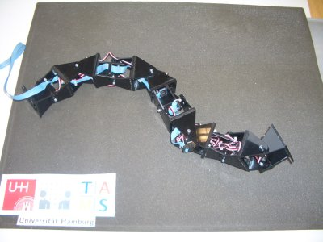
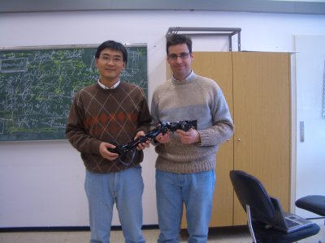
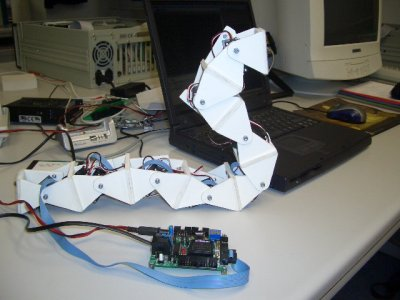
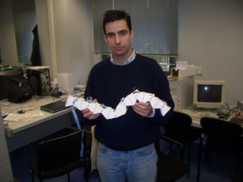
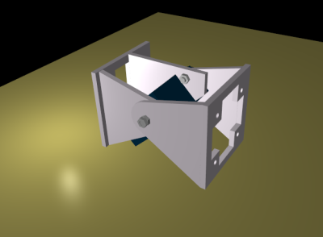
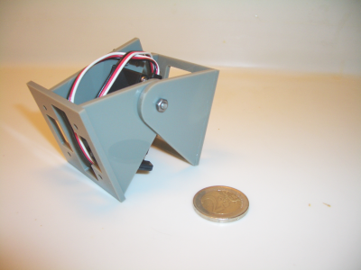

|
Juan Gonzalez-Gomez's web page |
|
|
|
|
Contact information |
Address:
Escuela Politecnica Superior
C/ Francisco Tomas y valiente, 11
28049 Madrid
Spain
Room: B-209
Telephone: +34- 91 497 22 68
Fax: +34 – 91 497 22 35
Email: juan.gonzalez@uam.es
Personal email: juan@iearobotics.com
|
Education |
|
Dates |
Institution |
Qualifications |
|
2003-Present |
Universidad Autonoma de Madrid |
Ph. D. candidate in robotics. |
|
2001-2003 |
Universidad Autonoma de Madrid |
Master. Mayor: Computer Science |
|
2001 |
Universidad Politecnica de Madrid |
Bachelor. Mayor: Telecomunication and electronics (6 years) |
|
Research topics |
Currently I am working on my Ph. D. Dissertation about modular robots and robotics. I have designed a basic module for the construction of several modular robots. Locomotion capabilities of modular robots is another research topic.
[2006]: Pitch-yaw connecting modular robot composed of 8 linked modules:
The robot has been developed based on the collaboration with Dr. Houxiang Zhang, during my three-month visiting to the TAMS group in University of Hamburg.
Locomotion capabilities:
|
 The modular robot |
 Dr. Houxiang Zhang and Juan Gonzalez |
[2005]: Minimal configurations in 1D and 2D
Built three novel minimal configurations for finding its locomotion capabilities. Two modules are needed for locomotion in 1D and three for locomotion in 2D.
PP: Pitch-pitch configuration. [Video]
PYP: Pitch-yaw-pitch configuration. [Video 1] [Video 2] [Video 3] [Video 4]
Three-points star configuration. Minimal configuration in 2D. [Video 1] [Video 2]
|
|
[2004]: Pitch-connecting modular robot, composed of 8 linked modules.
Locomotion capabilities:
All detail information can be found here (in Spanish)
More pictures:
|
 |
 |
[2003]: Basic modules for building modular robots.
Very cheap and easy to build
One degree of freedom, actuated by the Futaba 3003 servo
More information in this link (in Spanish)
|
 |
 |
|
Publications |
H.X. Zhang, J. Gonzalez-Gomez, S.Y. Chen, W. Wang, R. Lin, D. Li, J.W. Zhang. A Novel Modular Climbing Caterpillar Using Low-Frequency Vibrating Passive Suckers. IEEE/ASME International Conference on Advanced Intelligent Mechatronics. AIM2007. ETH Zurich, September 4-7, 2007, Switzerland. This paper was finalist for the AIM 2007 Best Paper Award (Certificate) [Paper in PDF]
Gonzalez-Gomez J., Zhang H., Boemo E., and Zhang J., “Locomotion Capabilities of a Modular Robot with Eight Pitch-Yaw-Connecting Modules”. Proceeding of the 9th International Conference on Climbing and Walking Robots, CLAWAR 2006, Brussels, Belgium, September, 2006. [HTML] [PDF] [Presentation slides in PDF]
Gonzalez-Gomez, J., Gonzalez, I., Gomez-Arribas FJ., and Boemo E., “Evaluation of a locomotion algorithm for worm-like robots on FPGA-embedded processors”. Proceeding of the International Workshop on Applied Reconfigurable Computing, ARC, 2006, Delf, The Nertherlands, March, 2006. [HTML] [PDF]
Gonzalez-Gomez J. and Boemo E., “Motion of Minimal Configurations of a Modular Robot: Sinusoidal, Lateral Rolling and Lateral Shift”, Proceeding of the 8th International Conference on Climbing and Walking Robots, CLAWAR, 2005, London, September, 2005, pp. 667-674. This paper received the “Industrial Robot Highly Commended Award”. [HTML] [PDF] [Presentation slides in PDF]
Gonzalez-Gomez J., Aguayo E. and Boemo E., “Locomotion of a Modular Worm-like Robot using FPGA-based embedded MicroBlaze Soft-processor”, Proceeding of the 7th International Conference on Climbing and Walking Robots, CLAWAR, 2004, Madrid, Spain,September, 2004, pp. 869-878. [HTML] [PDF] [Presentation slides in PDF]
Publications in Spanish:
(Spanish) J. Gonzalez-Gomez, I Gonzalez, FJ. Gomez-Arribas y E. Boemo ,”Evaluación de un Algoritmo de Locomoción de Robots Ápodos en Diferentes Procesadores Embebidos en FPGA” , V Jornadas de Computación Reconfigurable y Aplicaciones. JCRA 2005. Dentro del Primer Congreso Español de Informática, CEDI 2005. Granada (Spain), Septiembre 2005.
(Spanish) De Blas Foix, X, Gonzalez-Gomez, J, “Proyecto Chronojump: Sistema de Medida y Gestión de la Capacidad de Salto usando Software y Hardware Libres” , I Congreso de Tecnologías de Software Libre, CTSL 2005, Factultad de Informática, A Coruña. Julio 2005.
(Spanish) Juan Gonzalez-Gomez y Andres Prieto-Moreno Torres, “Hardware libre: la Tarjeta Skypic, una Entrenadora para Microcontroladores PIC", I Congreso de Tecnologías de Software Libre, CTSL 2005, Factultad de Informática, A Coruña. Julio 2005.
(Spanish) Gonzalez-Gomez, J, Aguayo E. y Boemo E, “Locomoción de un Robot Ápodo Modular con el Procesador MicroBlaze”, IV Jornadas sobre Computación Reconfigurable y Aplicaciones, JCRA04, Escuela Técnica Superior de Ingenierías. Universidad Autónoma de Barcelona, Septiembre 2004.
(Spanish) Gonzalez-Gomez, J, “Simulación de Diseños VHDL con Software Libre: La Herramienta GHDL”, IV Jornadas sobre Computación Reconfigurable y Aplicaciones, JCRA04, Escuela Técnica Superior de Ingenierías. Universidad Autónoma de Barcelona, Septiembre 2004
(Spanish) Juan Gonzalez, Andres Prieto-Moreno, "Herramientas hardware y software para el desarrollo de aplicaciones con Microcontroladores PIC bajo plataformas GNU/Linux", III Jornadas de Software Libre, Universidad Pontificia de Salamanca en Madrid. Mayo 2004
(Spanish)Ivan Gonzalez, Juan Gonzalez, Francisco Gomez-Arribas, “Hardware libre: clasificación y desarrollo de hardware reconfigurable en entornos GNU/Linux", VI Congreso de Hispalinux, Universidad Rey Juan Carlos I, Septiembre 2003
(Spanish)FJ. Gomez-Arribas, I. Gonzalez, J. Gonzalez y J. Martinez, “Laboratorio Web para Prototipado y Verificación de Sistemas Hardware/Software''. III Jornadas sobre Computación Reconfigurable y Aplicaciones, JCRA03, Escuela Politécnica Superior, Universidad Autónoma de Madrid, Septiembre 2003.
(Spanish) J Gonzalez, I. Gonzalez, E. Boemo, “Alternativas Hardware para la Locomoción de un Robot Ápodo'', III Jornadas sobre Computación Reconfigurable y Aplicaciones, JCRA03, Escuela Politécnica Superior, Universidad Autónoma de Madrid, Septiembre 2003.
(Spanish) J. Gonzalez, P.Haya, S. Lopez-Buedo y E. Boemo, “Tarjeta entrenadora para FPGA, basada en hardware abierto", Seminario Hispabot 2003, Alcalá de Henares, Madrid, Mayo 2003.
|
Working experience |
|
Dates |
Institution |
Qualifications |
|
Sept. 2004 - Present |
Universidad Autonoma de Madrid |
Teaching Assistant at the Computer Science Department. Teaching subjects: Mobile Robotics, Digital circuits design, Digital circuits principles and Computer Architecture. |
|
Sept. 2001 – Sept. 2004 |
Universidad Pontificia de Salamanca |
Teaching Assistant at the Communication and Electronic Department. Teaching subjects: Digital Electronic Principles, Computer Architecture and Computer Grounds. |
|
Nov. 2000 – Sept. 2001 |
Pulsar Technologies (Company) |
Development Engineer. Design and construction of micro-controlled based embedded systems, remotely controlled through Internet and SMS. |
|
Sept. 1998-Nov. 2000 |
Microbotica (Company) |
Working in the Research and Development Department. Design of electronic boards for controlling mobile robots |
|
Other relevant information |
International conferences:
CLAWAR 2006. International Conference on Climbing and Walking Robots. Brussels, Belgium.
ARC 2006. International Workshop on Applied Reconfigurable Computing. Delft, The Nertherlands
CLAWAR 2005. International Conference on Climbing and Walking Robots. London, UK.
CLAWAR 2004. International Conference on Climbing and Walking Robots. Madrid, Spain.
Workshops and conferences given by me in several Spanish Universities, in order to spread the robotics in Spain.
Workshop: “Workshops on Mobile Robotics”. (10 hours)
Campus Party. Valencia. July 2006.
Universidad de Cadiz. Nov 2005
Campus Party. Valencia. July 2005.
Universidad Alfonso X. Madrid. Nov 2003.
Invited Conferences:
“Robótica modular y locomoción: Robots Cube Revolutions y Multicube”. Universidad Rey Juan Carlos. Móstoles. Madrid. January. 2006
“Sesiones de robótica”, Comunidad de Madrid. Universidad Pontificia de Salamanca. Campus de Madrid. UPSAM. April 2005.
“Diseño de Robots ápodos: Cube Revolutions”, Concurso de robótica Robolid05. School of Engineering. Universidad de Valladolid. April 2005.
“Robótia y Linux: Cómo se hizo Cube Revolutions”, IV Jornadas de Software libre en la UPSAM. Marzo 2005.
“Robótica y Linux”, ¡Innovame!. Jornadas de difusión de la innovación tecnológia. CDTinternet.net. Madrid.January 2005.
“Diseño de Robots Ápodos: Cube Revolutions”, IV Semana de la ciencia en Madrid. Universidad Pontificia de Salamanca en Madrid. UPSAM. Noviembre 2004.
“Diseño de Robots ápodos: Cube Revolutions”, Semana de la Ciencia y Tecnología. Escuela Superior de Ingeniería de Cádiz. UCA. Noviembre 2004.
“El robot ápodo Cube Revolutions”. SICFIMA 2004. Facultad de Informática. UPM. Marzo. 2004.
|
Hobbies and interests |
I am very interested in robotics, not just for working, but for having fun. Also, I like the Open Source applications. All the software I have developed has been released under the GNU GPL license. My favourite operating systems is GNU/Linux.
In my spare time I like reading science fiction books and going to the cinema. Playing tennis, skating and skiing are my favourite sports

{kind=link}